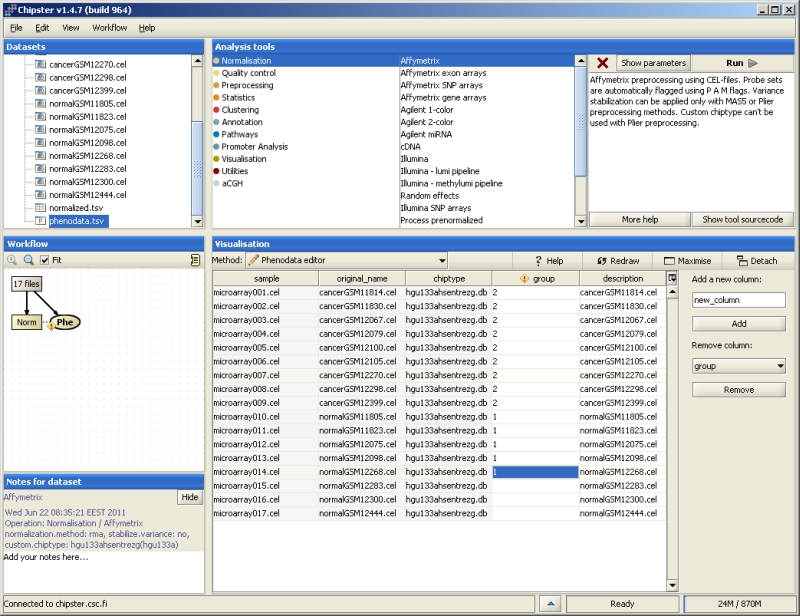
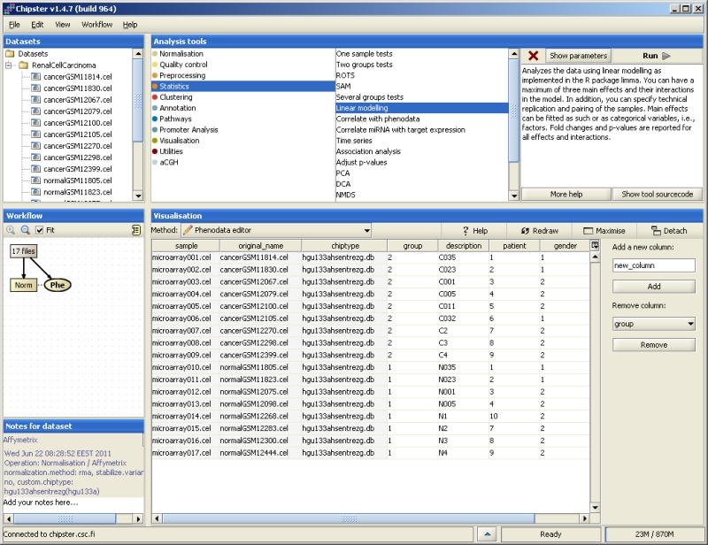

Phenodata is simply a description of your experimental setup. It allows you to describe the treatments, time points, replicates, etc. for the dataset you are analysing. In order to use statistical tests in Chipster, you have to fill in the group column of the phenodata file.
Phenodata file is generated during data normalization in Chipster. If you are importing normalized data to Chipster, you can generate a phenodata for it either by using the tool "Untilities/ Generate phenodata" or "Normalization/ Process prenormalized". You can edit phenodata using the Phenodata editor, which opens when you double-click on the phenodata file. Alternatively, Phenodata editor is offered in the visualization pulldown menu when phenodata has been selected. Yellow exclamation mark on the phenodata file means that you have to fill in the group column.
Phenodata contains one row per array in the experiment. The columns sample (the chip name in Chipster), original name (name of the original data file) and chiptype (which chip was used for the experiment) are obligatory and filled in by Chipster. Users need to fill in the group column to describe the experimental groups to Chipster. Note that only numbers are allowed in the group column. Once you have filled all the rows of the group column, the exclamation mark will disappear. The description column allows you to change the naming of the samples in visualizations.
If you have a simple set up, for example, a comparison of two groups without any other information on the samples, then it is sufficient to fill in the group column only. If you have more information, this data can be taken into account by coding it into additional columns in the phenodata. In order to add a new column, simply enter a name for it and click on the "Add" button. In order to delete a column, select it from the pulldown menu and click "Remove".
Every array in this experimental setup contains a reference and a treatment. The main interest is comparing treatment to control. In such a setup, all arrays are coded with 1 in the group column. This tells chipster to treat them a single group. The statistical analysis could be, for example, a one-group t-test.
Some of the samples belong to the control group, and some to the treatment group. Control samples should be coded with 1 and treatment samples with 2 in the group column. Then Chipster knows to compare treatment to control (control is coded with a smaller number than the treatment). If the control is coded with a larger number than the treatment, then the comparison is control against treatment. Since this makes a difference when interpreting the results such as fold change, it is worth paying attention to.
More than two groups can be coded with a running number in Chipster. However, it is suggested that the control group is always coded with the smallest number. In other words, the control group is coded with 1, the first treatment group with 2, the third treatment group with 3, and so on.
Pairing is introduced in the experiment if, for example, several measurements are taken from the same person. The samples could represent, e.g., before and after treatment measurements. In such cases pairing should be taken into account in the analysis. In Chipster the tool "Linear modelling" is able to include the pairing information in the analysis. Pairing is coded in the phenodata by first creating a new column, and then coding all the paired samples with the same number. For example, if there were two persons, with before and after treatment measurements, the phenodata could be filled in as:
group pair 1 1 2 1 1 2 2 2
The group column divides the samples into before treatment (1) and after treatment (2) groups, and the pair column specifies which samples are paired (person 1 and person 2).
The easiest way to deal with time is to treat it as a categorical variable. This applies to experiments where only a few time points have been used. Code the treatment in the group column, and create a new column for time. If it is treated as a categorical variable, code it with a running number, the first time point being the smallest number. This experiment is best analyzed using the linear modeling tool.